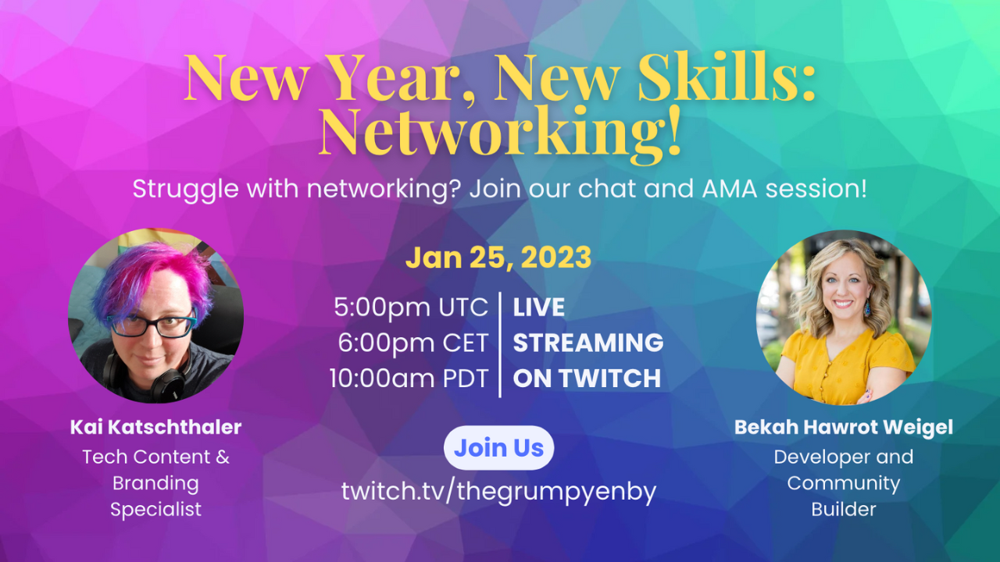

Public Speaking
I enjoy giving talks (predominantly about mental health-related topics) and enjoy hosting/emceeing conferences and events. I’ve also recently started a livestreaming series called “New Year, New Skills”, where my guests and I talk about core skills that help people in tech gain confidence and further their careers. I’ve linked previous episodes below, so check those out!
And if you’re interested in having me speak at or emcee your event, or if you’d like to have me guest on your stream or podcast, get in touch.
Upcoming Events
- 18/02/2023: Set Yourself Up For Success, ADHD Edition | Talk at Geek Beacon Fest 2023
- 23/02/2023: New Year, New Skills: Livestreaming | Livestream on TwitchAdd to calendar
Talks and Livestreaming
You Got This Broadcasting Service 2023: “How To Talk About Mental Health To Combat Stigma” — (Jan 04, 2023)
Livestream: “New Year, New Skills: Networking!” with Bekah Hawrot Weigel — (Jan 25, 2023)
